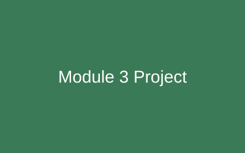
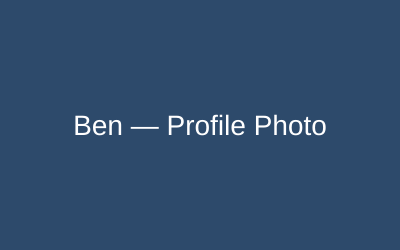
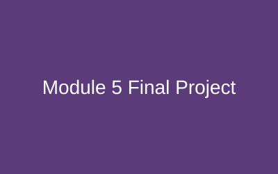

Python Command-Line Task Tracker
Module 3
A command-line program for adding, listing, and completing tasks, using functions, lists, and file storage to save data between runs.

Aspiring software developer building clean, practical web applications.
I'm a developer based in Iowa who enjoys turning ideas into working software. I'm currently growing my skills in Python, web development, and APIs through hands-on coursework, and I'm especially interested in building tools that help small businesses stay organized.

Module 3
A command-line program for adding, listing, and completing tasks, using functions, lists, and file storage to save data between runs.

Module 4
A small REST API built with FastAPI that supports create, read, update, and delete operations with request validation.

Module 5
A capstone web application combining a backend API with a simple front end, demonstrating everything learned across the course.

Email: ben.developer@example.com